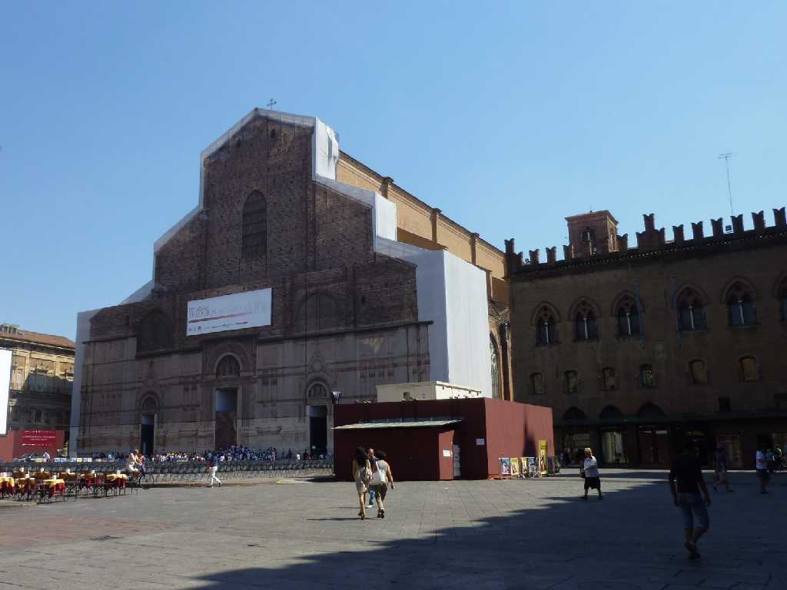
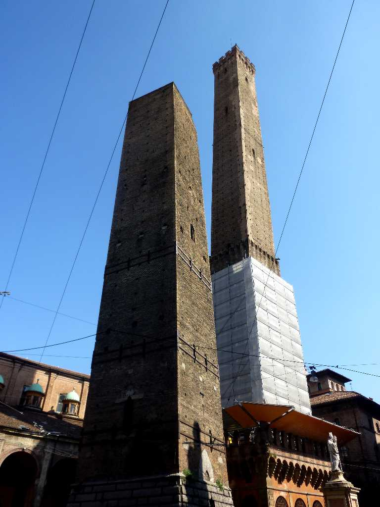
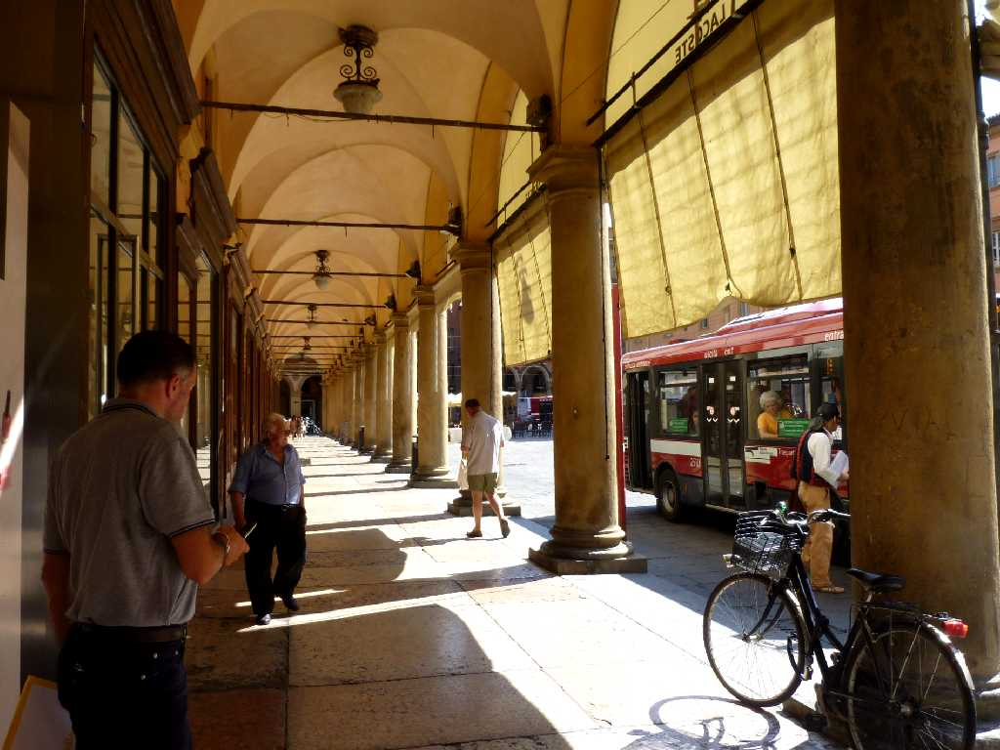
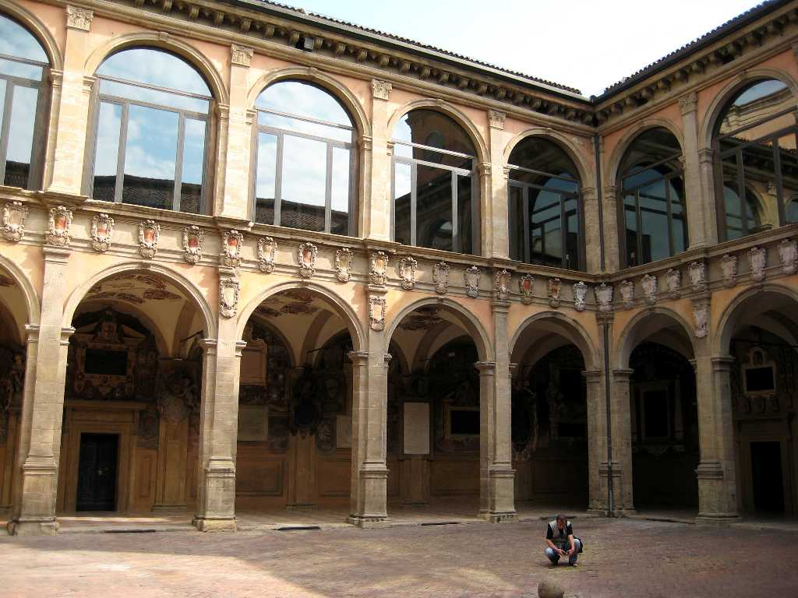

San Petronio Basilica Piazza Maggiore Bologna
サンペトロニオ大聖堂 マジョーレ広場

Torre degli Asinelli Bologna
高さ１０３ｍのボローニャの斜塔

Portico Bologna
道の上に増築したためにできたポローニャ名物ポルティコ

Universita di Bologna
１０８８年創設のヨーロッパ最古の総合大学